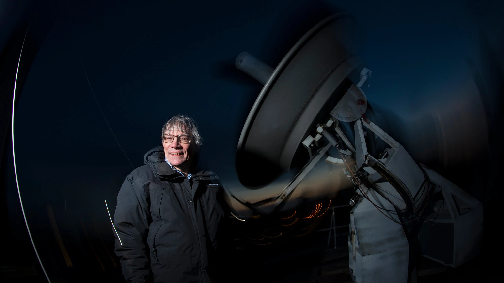

Alan Guth was one of the first physicists to hypothesize the existence of inflation, which explains how the universe expanded so uniformly and so quickly in the
instant after the Big Bang 13.8 billion years ago.Rick Friedman for The New York Times
By Dennis OverbyeMarch 17, 2014
SIGN UP FOR SCIENCE TIMES...Sign Up
Stanford Professor Andrei Linde celebrates physics breakthroughVideo by StanfordUniversity
The Bicep2 telescope, in the foreground, was used to detect the faint spiraling gravity patterns --- the signature of a universe being wrenched violently
apart at its birthSteffen Richter/Associated Press